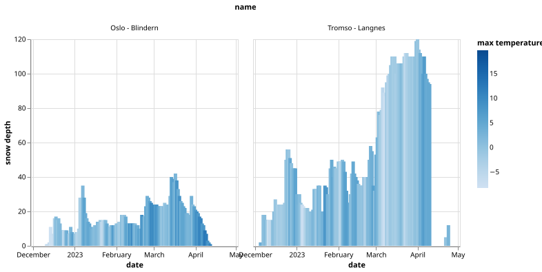

Reading and slicing data with pandas
Objectives
Knowing that pandas is a popular library for handling tabular data
Learning some basic usage of pandas dataframes
Reading data with pandas from disk or a web resource
Get a feeling for when pandas is useful and know where to find more information
We will build up this notebook (spoiler alert!)
Instructor note
30 min talking/demo
15 min exercise
[this lesson is adapted from https://aaltoscicomp.github.io/python-for-scicomp/pandas/]
Use case
Pandas dataframes are a great data structure for tabular data and tabular data turns out to be a great input format for data visualization libraries.
The pandas library provides dataframes, and functions for reading data into dataframes and for analyzing, filtering, and manipulating data in very compact form.
The name is derived from the term “panel data”.
Reading data into a dataframe
Pandas can read from and write to a large set of formats (overview of input/output functions and formats). We will load a CSV file directly from the web. Instead of using a web URL we could use a local file name instead.
We will experiment with some example weather data obtained from Norsk KlimaServiceSenter, Meteorologisk institutt (MET) (CC BY 4.0).
We can try this together in a notebook:
import pandas as pd
url_prefix = "https://raw.githubusercontent.com/coderefinery/data-visualization-python/main/data/"
data = pd.read_csv(url_prefix + "tromso-daily.csv")
data
What is in a dataframe?

A pandas dataframe object is composed of rows and columns.
Let us explore these together in the notebook (run these in separate cells):
# import the pandas library
import pandas as pd
# read the dataset
url_prefix = "https://raw.githubusercontent.com/coderefinery/data-visualization-python/main/data/"
data = pd.read_csv(url_prefix + "tromso-daily.csv")
# print an overview of the dataset
data
# print the first 5 rows
data.head()
# print the last 5 rows
data.tail()
# print all column titles - no parentheses here
data.columns
# show which data types were detected
data.dtypes
# print table dimensions - no parentheses here
data.shape
# print one column
data["max temperature"]
# get some statistics
data["max temperature"].describe()
# what was the maximum temperature?
data["max temperature"].max()
# print all rows where max temperature was above 20
data[data["max temperature"] > 20.0]
Combining dataframes
Using pandas we can merge, join, concatenate, and compare dataframes, see https://pandas.pydata.org/pandas-docs/stable/user_guide/merging.html.
Let us try to concatenate two dataframes: one for Tromsø weather data (we will now load monthly values) and one for Oslo:
# we don't need to import again but just in case you started here
import pandas as pd
url_prefix = "https://raw.githubusercontent.com/coderefinery/data-visualization-python/main/data/"
data_tromso = pd.read_csv(url_prefix + "tromso-monthly.csv")
data_oslo = pd.read_csv(url_prefix + "oslo-monthly.csv")
data = pd.concat([data_tromso, data_oslo], axis=0)
# let us print the combined result
data
Data cleaning
Before plotting the data, there is a problem which we may not see yet: Dates are not in a standard date format (YYYY-MM-DD). We can fix this:
# replace mm.yyyy to date format
data["date"] = pd.to_datetime(list(data["date"]), format="%m.%Y")
With pandas it is possible to do a lot more (adjusting missing values, fixing inconsistencies, changing format).
Plotting the data
Now let’s plot the data. We will start with a plot that is not optimal and then we will explore and improve a bit as we go:
import altair as alt
alt.Chart(data).mark_bar().encode(
x="date",
y="precipitation",
color="name",
)

Monthly precipitation for the cities Oslo and Tromsø over the course of a year.
Observe how we connect (encode) visual channels to data columns:
x-coordinate with “date”
y-coordinate with “precipitation”
color with “name” (name of weather station; city)
Let us improve the plot with a one-line change:
alt.Chart(data).mark_bar().encode(
x="date",
y="precipitation",
color="name",
column="name",
)

Monthly precipitation for the cities Oslo and Tromsø over the course of a year with with both cities plotted side by side.
This is not publication-quality yet but a really good start! In a later episode we will discuss how to beautify plots but this is good enough now for a quick data exploration.
Let us try one more example where we can nicely see how Altair is able to map visual channels to data columns:
alt.Chart(data).mark_area(opacity=0.5).encode(
x="date",
y="max temperature",
y2="min temperature",
color="name",
)

Monthly temperature ranges for two cities in Norway.
Exercise: Arranging plots in columns and rows
Pandas-1: Columns and rows
Instead of plotting the precipitations side by side, try to arrange the two plots one above the other.
In the precitipation plot, instead of
column="name"trycolumn="date"and compare the two results. Don’t worry too much about the labels and annotations. They can be improved.Modify the temperature range plot to have the two cities side by side, instead of both in one plot.
Using visual channels
Now we will try to plot the daily data. We first read and concatenate two datasets:
url_prefix = "https://raw.githubusercontent.com/coderefinery/data-visualization-python/main/data/"
data_tromso = pd.read_csv(url_prefix + "tromso-daily.csv")
data_oslo = pd.read_csv(url_prefix + "oslo-daily.csv")
data = pd.concat([data_tromso, data_oslo], axis=0)
We adjust the data a bit:
# replace dd.mm.yyyy to date format
data["date"] = pd.to_datetime(list(data["date"]), format="%d.%m.%Y")
# we are here only interested in the range december to may
data = data[(data["date"] > "2022-12-01") & (data["date"] < "2023-05-01")]
Now we can plot the snow depths for the months December to May for the two cities:
alt.Chart(data).mark_bar().encode(
x="date",
y="snow depth",
column="name",
)

Snow depth (in cm) for the months December 2022 to May 2023 for two cities in Norway.
What happens if we try to color the plot by the “max temperature” values?
alt.Chart(data).mark_bar().encode(
x="date",
y="snow depth",
color="max temperature",
column="name",
)
The result looks neat:

Snow depth (in cm) for the months December 2022 to May 2023 for two cities in Norway. Colored by daily max temperature.
We can change the color scheme (available color schemes):
alt.Chart(data).mark_bar().encode(
x="date",
y="snow depth",
color=alt.Color("max temperature").scale(scheme="plasma"),
column="name",
)
With the following result:

Snow depth (in cm) for the months December 2022 to May 2023 for two cities in Norway. Colored by daily max temperature. Warmer days are often followed by reduced snow depth.
Exercise: Anscombe’s quartet
Save the following data as example.csv (you can do this directly from
JupyterLab; this data is the Anscombe’s
quartet):
dataset,x,y
I,10.0,8.04
I,8.0,6.95
I,13.0,7.58
I,9.0,8.81
I,11.0,8.33
I,14.0,9.96
I,6.0,7.24
I,4.0,4.26
I,12.0,10.84
I,7.0,4.82
I,5.0,5.68
II,10.0,9.14
II,8.0,8.14
II,13.0,8.74
II,9.0,8.77
II,11.0,9.26
II,14.0,8.1
II,6.0,6.13
II,4.0,3.1
II,12.0,9.13
II,7.0,7.26
II,5.0,4.74
III,10.0,7.46
III,8.0,6.77
III,13.0,12.74
III,9.0,7.11
III,11.0,7.81
III,14.0,8.84
III,6.0,6.08
III,4.0,5.39
III,12.0,8.15
III,7.0,6.42
III,5.0,5.73
IV,8.0,6.58
IV,8.0,5.76
IV,8.0,7.71
IV,8.0,8.84
IV,8.0,8.47
IV,8.0,7.04
IV,8.0,5.25
IV,19.0,12.5
IV,8.0,5.56
IV,8.0,7.91
IV,8.0,6.89
Exercise Pandas-2: read and plot a CSV file
Save the above CSV file to disk as
example.csvin the same folder where you run JupyterLab. We recommend to create the file in the JupyterLab interface.Plot the data but instead of
mark_bar, usemark_point.Your goal is to arrive at four plots for the four data sets, all side by side.
If you have time, try to customize the plot.
Solution
# we don't need to import again but just in case you started here
import pandas as pd
data = pd.read_csv("example.csv")
alt.Chart(data).mark_point().encode(
x="x",
y="y",
color="dataset",
column="dataset",
)
Where to learn more about pandas
Pandas is extremely powerful and there is a lot that can be done and there are great resources to explore more:
Getting started guide (including tutorials and a 10 minute flash intro)
Data Carpentry lesson “Data Analysis and Visualization in Python for Ecologists” (useful not only for ecologists)
Keypoints
Pandas dataframes are a good data structure for tabular data.
Dataframes allow both simple and advanced analysis in very compact form.
Some visualization libraries (such as Vega-Altair) interface very nicely with pandas dataframes.